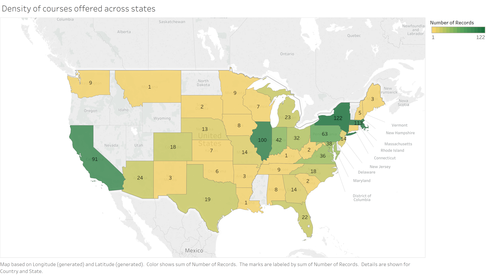
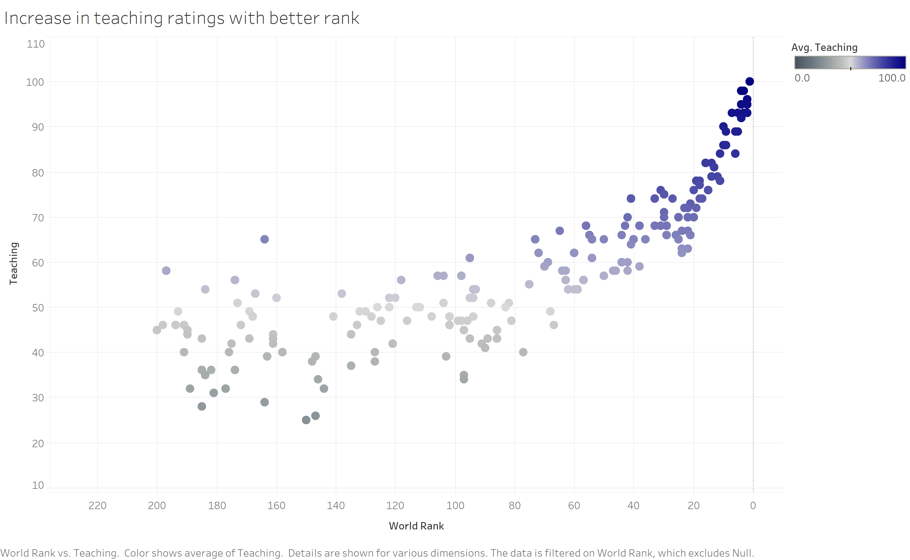
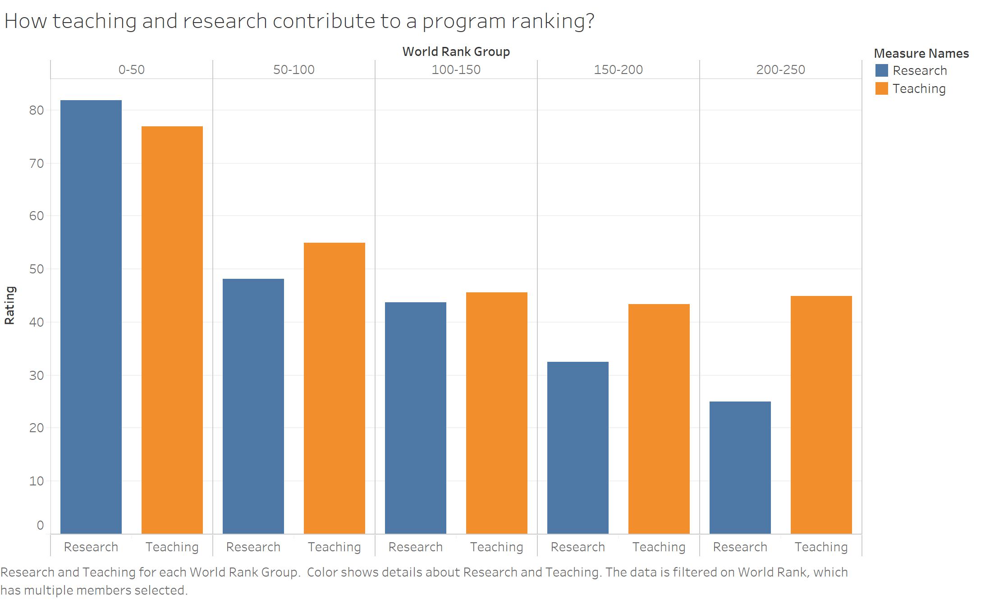

Data Science Universities across US

Introduction
Doing post graduate in the United States of America is a dream of countless students around the world. Every year, thousands of students across the world apply to universities in US but only a few get through. Moreover, US being the largest analytics/data science market in the world, attracts a major population of the students to the field.
But just deciding the course doesn't help the students much. The applicants to the courses need to research on what university they want to apply to, if they prefer a research-centric university or a university that is higher up in the ranking. Most students depend heavily on the college and course rankings (like I did) to decide the universities to apply to. Hence, I decided to use this dataset (Kaggle link) as it contains information regarding the top 250 data science courses along with rated features like teacher rating and percent of international students, in search to coorelate the world rank with other features and find out their dependencies.
First detail that comes to mind is regarding their geographical positioning, and hence the question -
Q1: How are all the data science universities spread across US?

Figure 1. Density of courses offered across USA
The visualization above in Figure 1 shows the distribution of number of courses presented with shading with a shade variation as mentioned in the legend on a map of United States. The data is refined by filtering out the null values in rank. I observed most of the courses offered are densely populated in very few of the states like New York, Massachusetts and California, or distributed all across the country with each state having a few options. The distribution also attracts attention to the fact that the density of courses offered increasing towards the east coast and west coast, near areas like Silicon Valley and New York offering surplus of job opportunities around them. But this is not what we are going to focus on in the next step, as we go forward to look at another important aspect. What would majorly affect the rank of the data science courses in these colleges?
Q2: What parameters contribute most to achieving a better world rank amongst universities?

Figure 2. Increase in teaching rating indicates better rank
In figure 2, the teaching rating is plotted against the world rank as it is the parameter that seems to affect the rank the most. As there are multiple courses sharing the same rank, an average measure of the rating is taken for each world rank and the null values are filtered out. Both the rating and ranking are marked as continuous to obtain a scatterplot. The visualization shows a direct relation between the teaching rating and the rank of a university course indicating that a better teaching environment and style ensures a better rank. We do see some outliers where the rank is low even after the teaching is decent, for example Certification in Data Science at Georgetown university though has an above average teaching rating but the world rank still remains poor. This outlier information made me question, if there is any other parameter that is almost equally responsible for the rankings.
Q3: What other parameters supplement teaching as a major input for the world rank?

Figure 3. Average of research and teaching against world rank groups
The bar graph, in Figure 3 shows a correlation between research and teaching against world rank groups. The world rank groups is a calculated field which has bins of 50 ranks each, starting from 0-50. An average of research and teaching on the entire range of world rank for the respective groups and are plotted after filtering out the null values. The final visualization that we achieve gives a clear indication on how both research and teaching are responsible for a world rank of the partiular course. Also, when we look at the final three bins, i.e., 100-150, 150-200 and 200-250, we observe that the teaching rating for the later rank groups is almost constant while the research varies, directly with the ranking. This explains the outlier mentioned in the previous question, where Georgetown university had a lower rank in spite of a good teaching rating. The Georgetown university was lacking in the field of research hence earning the university a lower rank.
Summary
The analysis and visualizations above prove a direct relationship amongst the teaching and research rating with the world rank. It clearly indicates that the ranking of a university is strongly dependent on these parameters. Also, it can be concluded that though the teaching plays a major role while deciding the world rank; research is the component that mostly distinguishes between the later ranks as teaching doesn't fluctuate much. Hence I would say, students applying for a data science/analytics should look into how much these parameters affect them, because for some having a good research rating might not even be that useful. In conclusion, the students need to identify what they expect from the university and then look for them rather than just sticking to the ranking as the rank is dependent on multiple features which need not be necessary for everyone.